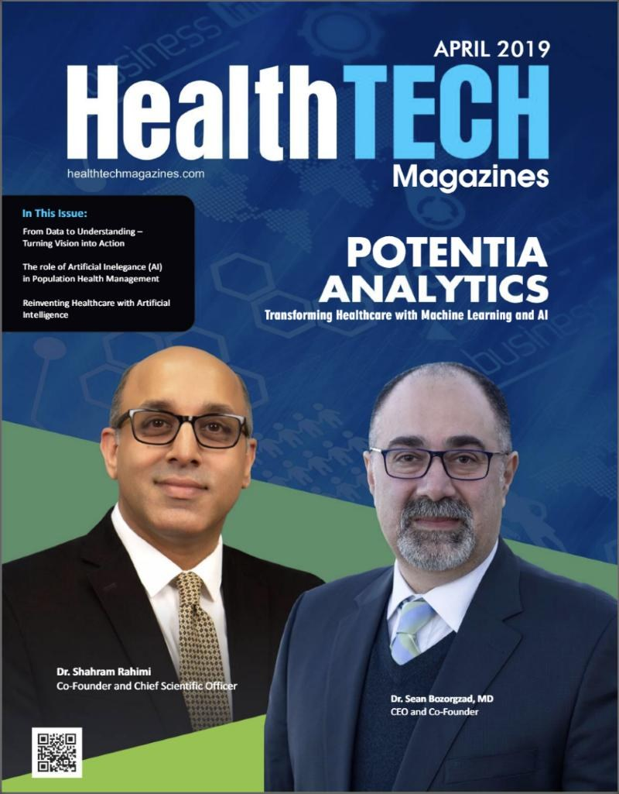

About
Shahram Rahimi is Professor and Head of the Department of Computer Science in the College of Engineering at the University of Alabama, where he also serves as Chief Research Computing Officer of the High Performance Computing and Data Center. Before joining Alabama, he was the Gloria & Douglas Marchant Endowed Chair Professor and Head of the Department of Computer Science and Engineering at Mississippi State University, and prior to that, Professor and Chair of Computer Science at Southern Illinois University.
A recognized expert in artificial intelligence, Dr. Rahimi has published more than 300 peer-reviewed articles and holds several patents, with others pending. His career spans academia and industry, including consulting for NASA and IBM, and he has advised numerous federal task forces on predictive analytics for policy and defense. He has been responsible for more than $28 million in federally and industry-funded research as principal investigator or co-principal investigator, and has organized 15 international conferences on computational intelligence and multi-agent systems.
Beyond the university, Dr. Rahimi is a co-founder of Potentia Analytics, Inc., a healthcare-AI company where he serves as Chief Scientific Officer. His intelligent staffing technology, commercialized through Potentia, is used in over 800 emergency departments across the United States and was named a top-10 AI technology for healthcare in 2018.
He has served as editor-in-chief of two major AI journals, sits on the editorial boards of several others, and is a member of the IEEE New Standards Committee in Computational Intelligence. Over two decades he has chaired and organized conferences across computational intelligence and multi-agent systems, and he regularly serves as a reviewer and panelist for federal funding agencies.
His current research program centers on agentic and explainable AI, predictive maintenance and prognostics, and intelligent decision support for healthcare, cybersecurity, and defense — work carried out with the graduate researchers of the PATENT Laboratory, whose alumni have gone on to positions in academia and industry across the country.
Research
Computational intelligence
Knowledge and expert systems, fuzzy rule-based systems, genetic algorithms, swarm computing, and computing with words — theory and implementation.
AI & machine learning
Applied machine learning for healthcare, cybersecurity, and the political and social sciences, including interpretable and generative models.
Multi-agent systems & agentic AI
Formal modeling of intelligent agents, coordination and trust, and agent-based architectures for distributed intelligence.
Predictive analytics
Predictive maintenance, decision and policy support, risk management, and game-theoretic prediction for complex systems.
Current activities
Selected publications
- Explainable Intrusion Detection Systems (X-IDS): A Survey of Current Methods, Challenges, and Opportunities Cited by 431
- SentiCR: A Customized Sentiment Analysis Tool for Code Review Interactions Cited by 246
- Explainable Predictive Maintenance: A Survey of Current Methods, Challenges and Opportunities Cited by 224
- Machine Learning Algorithms in Quantum Computing: A Survey Cited by 193
- Security Considerations in AI-Robotics: A Survey of Current Methods, Challenges, and Opportunities Cited by 125
Browse all publications, ranked by citations → · Google Scholar · dblp
Lab & tools
PATENT Laboratory
Predictive Analytics and Technology Integration
The PATENT Lab develops predictive-analytics methods and systems — from predictive maintenance and prognostics to decision support for healthcare and defense — and trains graduate researchers at the intersection of AI and real-world operations.
Visit the lab →Potentia Analytics
Healthcare AI — co-founder & Chief Scientific Officer
Potentia turns healthcare data into data-driven operational decisions: Symphony, AI-powered provider scheduling; BernoulliAI, machine-learning simulation and optimization of patient flow; and Command Center, predictive coordination of care across a health system — serving major health systems nationwide.
Visit Potentia Analytics →ER Watcher
Hospital performance analytics
A benchmarking and analytics tool that lets hospitals see how well their emergency department is performing, built on the same research program behind Potentia's intelligent staffing and patient-flow systems.
Visit ER Watcher →
On the cover of HealthTech Magazines
Dr. Rahimi was featured on the April 2019 cover of HealthTech Magazines as co-founder and Chief Scientific Officer of Potentia Analytics — the company behind the intelligent staffing technology named a top-10 AI technology for healthcare in 2018 and now used in over 800 emergency departments.
Editorial & professional service
Editorial roles
- Scalable Computing: Practice and Experience — Editorial Board; Book Review Editor
- Engineering Letters — Associate Editor
- Informatica: An International Journal of Computing and Informatics — Contact Editor for America
- International Journal of Computer Science & Applications — Editorial Board
- IADIS International Journal on Computer Science and Information Systems — Editorial Board
Professional service
- Editor-in-chief of two major AI journals (past)
- Member, IEEE New Standards Committee in Computational Intelligence
- Member of federal task forces advising on predictive analytics for policy and defense
- Organizer of 15 international conferences on computational intelligence and multi-agent systems
- Industry consulting, including NASA and IBM